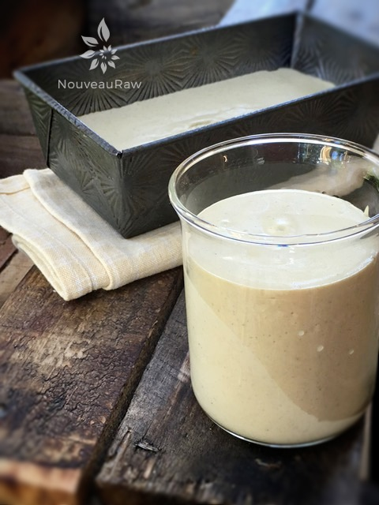
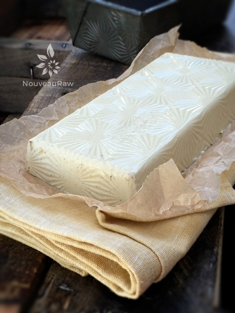
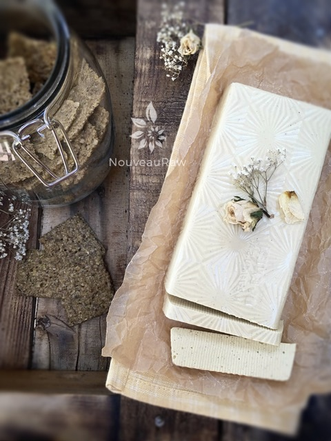
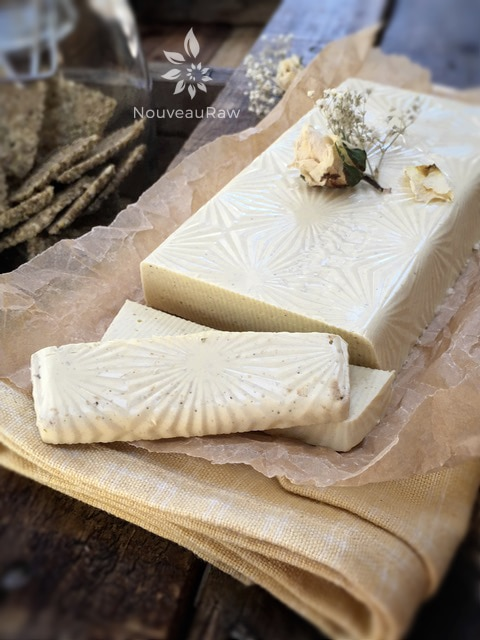

Tarragon & Mustard Vegan Cheese
~ high-raw, vegan, gluten-free ~
This recipe is not completely raw, but it is high-raw, vegan, and low in fat. It uses a small amount of almonds or cashews, coupled with the agar which gives it its body. I did some research on agar and found some interesting facts.
Learning about Agar
First of all, it is a vegetarian gelatin substitute produced from a variety of seaweed. It is sold in health food stores in both flake and powder versions and can be used in a variety of dairy-free and vegan recipes as a stabilizing and thickening agent
It is composed of 80% fiber, which helps stimulate intestinal peristalsis, and helps to cleanse the bowels and soften stools. Because its fiber content is so high, agar is also a mild laxative. Therefore, it may be a problem for those with weak digestive systems.
Agar also absorbs glucose and water as it passes through the digestive tract, which also aids in waste elimination. There is also evidence that agar has anti-inflammatory properties, and can help heal conditions such as hemorrhoids. I am gonna end on that note. (no pun intended hehe)
Tips and Tricks
So here’s the scoopy-doop when making agar cheeses… Number one, you need to be prepared. Have everything ready to go before you start the agar slurry. The second you take the agar off of the heat source, it starts to thicken. Make sure you have your mold(s) ready and waiting nearby.
This recipe yields two cups of cheese batter, so I like to fill a two cup measuring cup up with water and test my molds to make sure that it/they will hold all of the batter. If you don’t… chances are you will have some batter left over, and you will be frantically scurrying all over the kitchen to quickly find something to put it in. I speak from experience… over and over. hehe
When it comes to molds, you can pretty much use any type of container. The only kind that you have to watch out for is a container that narrows at the neck. If you use that, you won’t be getting your cheese out. Look for fun shapes and containers that may have a pattern etched into them. I never oil or line my containers, and for the past eight years of making these types of cheese, I have never had a cheese refuse to leave the container. I hope that you enjoy this recipe. Many blessings, amie sue
yields 2 cups
- 1/2 cup raw almonds or cashews, soaked
- 1/2 cup water
- 1/4 cup nutritional yeast
- 1/4 cup lemon juice
- 2 Tbsp hemp seeds
- 2 tsp Dijon mustard
- 1/2 Tbsp onion powder
- 1/2 tsp garlic powder
- 1/2 tsp dry mustard
- 3/4 tsp Himalayan pink salt
- 1 garlic clove
- 3 tsp dry tarragon leaves
Agar slurry:
Preparation:
- Have the cheese mold(s) set aside and ready.
- This will make 2 cups of cheese. I like to pour a measured amount of water in my molds first, just to make sure that it (they) will hold all of the cheese batter. That way you aren’t scrambling last-minute to find something.
- Keep in mind that whatever impressions are in your container will leave an impression on your cheese. The last batch of cheese that I made said, “Recycle” on it. haha
- Soak the almonds or cashew, rinse and drain.
- Pop the skins off of the almonds. If you don’t, you can see the brown flecks of the almond skins in the cheese.
- In a high-speed blender place the; almonds or cashews, water, nutritional yeast, lemon juice, hemp seeds, onion and garlic powders, dry and Dijon mustard, salt and garlic clove. Process until creamy.
- You want to batter creamy before starting the agar. If your batter is grainy, so will your cheese.
Agar slurry:
- In a small pan combine water and agar. Bring to a boil then reduce the heat and simmer, often stirring with a whisk, until completely dissolved, about 5 to 10 minutes.
- Start the blender and get a vortex going, drizzle in the agar mixture in with the other ingredients and process until completely smooth, scraping down the sides of the blender jar as necessary.
- You will need to move quickly. Agar sets up quickly.
- Be careful not to burn yourself.
- Pour the batter into the molds and cool uncovered in the refrigerator.
- When completely cool, cover and chill several more hours.
- Store covered the fridge for up to 5 to 7 days.

When it comes to creating vegan cheese with agar… you can pretty much darn near use any type of container. Here I used an antique bread loaf pan that had a neat pattern in it, and a glass beaker.

Look at the awesome pattern that it created in the cheese. You can’t see and I didn’t notice it at first but it also left an impression of “made in the USA” lol How appropriate.


© AmieSue.com